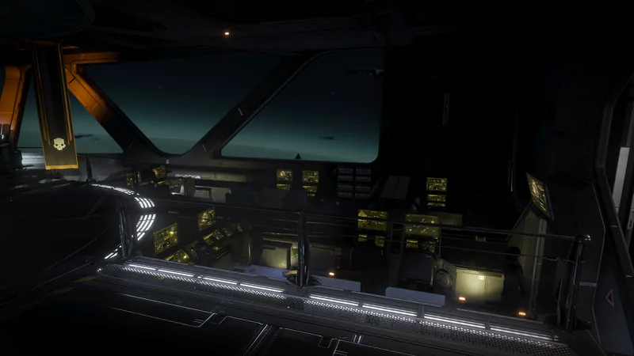

核动力雷达

“配备高能钚-210电池，装备后可扩大绝地潜兵的雷达探测范围。
— 舰船管理终端
核动力雷达 is a Tier 2 舰船模块 升级 for the Bridge.
升级效果
增加 小地图 enemy ping radius by 50%
- The 增加 is from 50-meters to 75-meters
要求
- 瞄准软件升级
 80 Common Sample
80 Common Sample 40 Rare Sample
40 Rare Sample
变更历史
补丁
描述
1.000.000
2024-02-08
Released with the game.